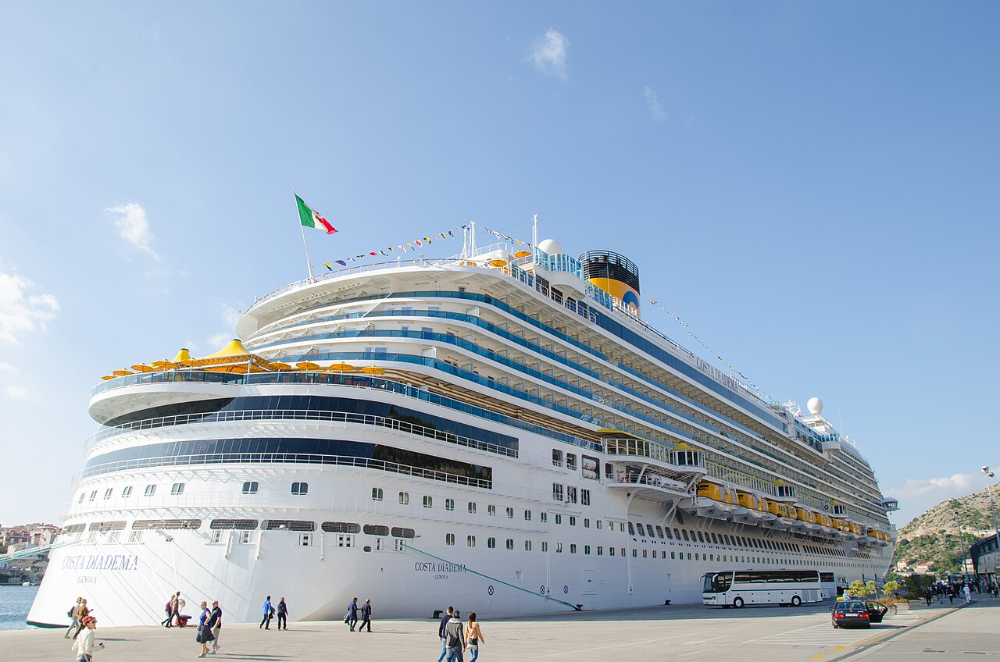

CRUZEIROS · TEMPORADA 2026/27
Costa Diadema

O Costa Diadema tem minicruzeiros e viagens pelo Prata com embarque em Santos.
Veja os percursos e cidades da temporada na página de cruzeiros da RUD Viagens.
Ver navio e roteiros Costa →CRUZEIROS · TEMPORADA 2026/27

O Costa Diadema tem minicruzeiros e viagens pelo Prata com embarque em Santos.
Veja os percursos e cidades da temporada na página de cruzeiros da RUD Viagens.
Ver navio e roteiros Costa →